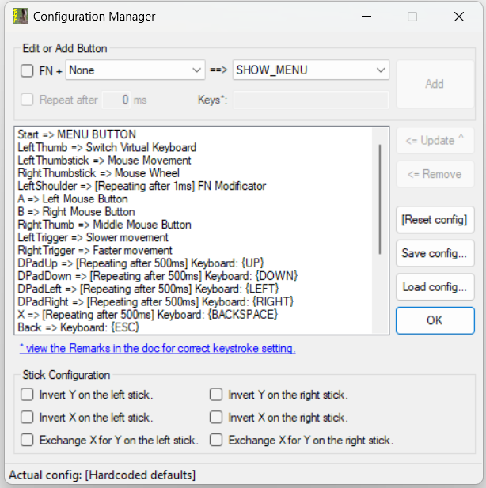

Get it on Steam for only 2.99$ (soon)
Or compile it yourself.What is BunnyPad?
With BunnyPad you can use your XBox-controller to control your Windows-PC.The newest version also supports standard pc gamepads wich use DirectInput instead of XInput.
It is intended to be used by gamers or visitors, for watching movies and other "small" stuff: You don't have to pass the whole keyboard-mouse-mousepad combination to your visitor when he wants to google something. Just give him the XBox-controller. ;)
You can move and use the mouse - including mouse wheel - set the system volume, press several key combinations and even use a virtual keyboard (VK). With the FN-button pressed, the buttons will do another, secondary function. Also you have a button for slowing down or speeding up the mouse movement.
BunnyPad can be configured to your needs. It loads the last saved or loaded configuration on startup.
Default Configuration
This is the hardcoded default configuration:Virtual Keyboard
When you press the VK-button, this virtual keyboard appears on the top right corner of your desktop:and this is the configuration for it:
Configuration
This is the configuration window:
You can configure everything except for the virtual keyboard.
Usage Examples
I use BunnyPad myself with the following software:+ Browsing the internet
++> Like using MangaRock.com with the digipad (Arrow keys).
+ Inkscape -> With the SLOWER_MOVEMENT function you can be even preciser than with the mouse.
+ Several old games like "The Curse Of Monkey Island" or "Beyond Good & Evil" (the latter is untested but intended to use for because it has no own gamepad configuration.)